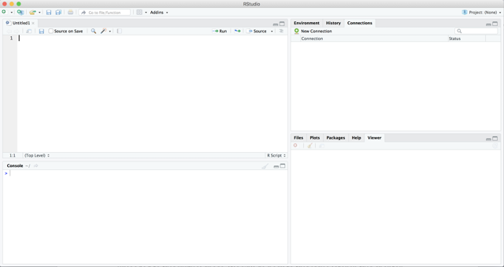
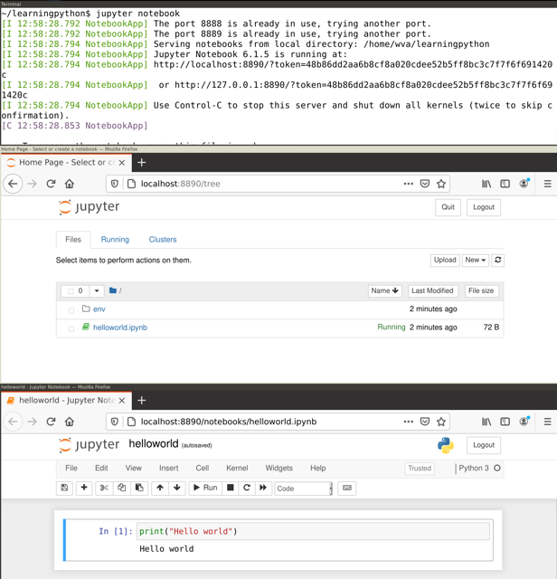

1.Introduction
- Understand the role of computational analysis in the social sciences
- Understand the choice between Python and/or R
- Know how to read this book
1.1.The Role of Computational Analysis in the Social Sciences
The use of computers is nothing new in the social sciences. In fact, one could argue that some disciplines within the social sciences have even been early adopters of computational approaches. Take the gathering and analyzing of large-scale survey data, dating back to the use of the Hollerith Machine in the 1890 US census. Long before every scholar had a personal computer on their desk, social scientists were using punch cards and mainframe computers to deal with such data. If we think of the analysis of communication more specifically, we already see attempts to automate content analysis in the 1960's see, e.g. Scharkow, 2017 .
However, something has profoundly changed in recent decades. The amount and type of data we can collect as well as the computational power we have access to have increased dramatically. In particular, digital traces that we leave when communicating online, from access logs to comments we place, have required new approaches e.g., Trilling, 2017 . At the same time, better computational facilities now allow us to ask questions we could not answer before.
González-Bailón (2017), for instance, argued that the computational analysis of communication now allows us to test theories that were formulated a century ago, such as Tarde's theory of social imitation. Salganik (2019) tells an impressive methodological story of continuity in showing how new digital research methods build on and relate to established methods such as surveys and experiments, while offering new possibilities by observing behavior in new ways.
A frequent misunderstanding, then, about computational approaches is that they would somehow be a-theoretical. This is probably fueled by clichés coined during the “Big Data”-hype in the 2010's, such as the infamous saying that in the age of Big Data, correlation is enough Mayer-Schönberger and Cukier, 2013; but one could not be more wrong: as the work of Kitchin shows Kitchin, 2014a; Kitchin, 2014b, computational approaches can be well situated within existing epistemologies. For the field to advance, computational and theoretical work should be symbiotic, with each informing the other and with neither claiming superiority Margolin, 2019. Thus, the computational scientists' toolbox includes both more data-driven and more theory-driven techniques; some are more bottom-up and inductive, others are more top-down and deductive. What matters here, and what is often overlooked, is in which stage of the research process they are employed. In other words, both inductive and deductive approaches as they are distinguished in more traditional social-science textbooks e.g., Bryman, 2012 have their equivalent in the computational social sciences.
Therefore, we suggest that the data collection and data analysis process is thought of as a pipeline. To test, for instance, a theoretically grounded hypothesis about personalization in the news, we could imagine a pipeline that starts with scraping online news, proceeds with some natural-language processing techniques such as Named Entity Recognition, and finally tests whether the mentioning of persons has an influence on the placement of the stories. We can distinguish here between parts of the pipeline that are just necessary but not inherently interesting to us, and parts of the pipeline that answer a genuinely interesting question. In this example, the inner workings of the Named Entity Recognition step are not genuinely interesting for us – we just need to do it to answer our question. We do care about how well it works and especially which biases it may have that could affect our substantive outcomes, but we are not really evaluating any theory on Named Entity Recognition here. We are, however, answering a theoretically interesting question when we look at the pipeline as a whole, that is, when we apply the tools in order to tackle a social scientific problem. Of course, what is genuinely interesting depends on one's discipline: For a computational linguist, the inner workings of the Named Entity Recognition may actually be the interesting part, and our research question just one possible “downstream task”.
This distinction is also sometimes referred to as “building a better mousetrap” versus “understanding”. For instance, Breiman (2001) remarked: “My attitude toward new and/or complicated methods is pragmatic. Prove that you've got a better mousetrap and I'll buy it. But the proof had better be concrete and convincing.” (p. 230). In contrast, many social scientists are using statistical models to test theories and to understand social processes: they want to specifically understand how \(x\) relates to \(y\), even if \(y\) may be better predicted by another (theoretically uninteresting) variable.
This book is to some extent about both building mousetraps and understanding. When you are building a supervised machine learning classifier to determine the topic of each text in a large collection of news articles or parliamentary speeches, you are building a (better) mousetrap. But as a social scientist, your work does not stop there. You need to use the mousetrap to answer some theoretically interesting question.
Actually, we expect that the contents of this book will provide a background that helps you to face the current research challenges in both academia and industry. On the one hand, the emerging field of Computational Social Science has become one of the most promising areas of knowledge and many universities and research institutes are looking for scholars with this profile. On the other hand, it is widely known that nowadays the computational skills will increase your job opportunities in private companies, public organizations, or NGOs, given the growing interest in data-driven solutions.
When planning this book, we needed to make a couple of tough choices. We aimed to at least give an introduction to all techniques that students and scholars who want to computationally analyze communication will probably be confronted with. Of course, specific – technical – literature on techniques such as, for instance, machine learning can cover the subject in more depth, and the interested student may indeed want to dive into one or several of the techniques we cover more deeply. Our goal here is to offer enough working knowledge to apply these techniques and to know what to look for. While trying to cover the breadth of the field without sacrificing too much depth when covering each technique, we still needed to draw some boundaries. One technique that some readers may miss is agent-based modeling (ABM). Arguably, such simulation techniques are an important technique in the computational social sciences more broadly Cioffi-Revilla, 2014, and they have recently been applied to the analysis of communication as well Waldherr, 2014; Wettstein, 2020. Nevertheless, when reviewing the curricula of current courses teaching the computational analysis of communication, we found that simulation approaches do not seem to be at the core of such analyses (yet). Instead, when looking at the use of computational techniques in fields such as journalism studies e.g., Boumans and Trilling, 2016 , media studies e.g., Rieder, 2017 , or the text-as-data movement Grimmer and Stewart, 2013, we see a core of techniques that are used over and over again, and that we have therefore included in our book. In particular, besides general data analysis and visualization techniques, these are techniques for gathering data such as web scraping or the use of API's; techniques for dealing with text such as natural language processing and different ways to turn text into numbers; supervised and unsupervised machine learning techniques; and network analysis.
1.2.Why Python and/or R?
By far most work in the computational social sciences is done using Python and/or R. Sure, for some specific tasks there are standalone programs that are occasionally used; and there are some useful applications written in other languages such as C or Java. But we believe it is fair to say that it is very hard to delve into the computational analysis of communication without learning at least either Python or R, and preferably both of them. There are very few tasks that you cannot do with at least one of them.
Some people have strong beliefs as to which language is “better” – we do not subscribe to that view. Most techniques that are relevant to us can be done in either language, and personal preference is a big factor. R started out as a statistical programming environment, and that heritage is still visible, for instance in the strong emphasis on vectors, factors, et cetera, or the possibility to estimate complex statistical models in just one line of code. Python started out as a general-purpose programming language, which means that some of the things we do feel a bit more `low-level' – Python abstracts away less of the underlying programming concepts than R does. This sometimes gives us more flexibility – at the cost of being more wordy. In recent years, however, Python and R have been growing closer to each other: with modules like pandas and statsmodels, Python now has R-like functionality handling data frames and estimating common statistical models on them; and with packages such as quanteda, handling of text – traditionally a strong domain of Python – has become more accessible in R.
This is the main reason why we decided to write this “bi-lingual” book. We wanted to teach techniques for the computational analysis of communication, without enforcing a specific implementation. We hope that the reader will learn from our book, say, how to transform a text into features and how to choose an appropriate machine learning model, but will find it of less importance in which language this happens.
However, sometimes, there are good reasons to choose one language above the other. For instance, many machine learning models in the popular caret package in R under the hood create a dense matrix, which severely limits the number of documents and features one can use; also, some complex web scraping tasks are maybe easier to realize in Python. On the other hand, R's data wrangling and visualization techniques in the tidyverse environment are known for their user-friendliness and quality. In the rare cases where we believe that R or Python is clearly superior for a given task, we indicate this; for the rest, we believe that it is up to the reader to choose.
1.3.How to use this book
This book differs from more technically oriented books on the one hand and more conceptual books on the other hand. We do cover the technical background that is necessary to understand what is going on, but we keep both computer science concepts and mathematical concepts to a minimum. For instance, if we had written a more technical book about programming in Python, we would have introduced rather early and in detail concepts such as classes, inheritance, and instances of classes. Instead, we decided to provide such information only as additional background where necessary, and to focus, rather pragmatically, on the application of techniques for the computational analysis of communication. Vice versa, if we had written a more conceptual book on new methods in our field, we would have given more emphasis to epistemological aspects, and had skipped the programming examples, which are now at the core of this book.
We do not expect much prior knowledge from the readers of this book. Sure, some affinity with computers helps, but there is no strict requirement on what you need to know. Also in terms of statistics, it helps if you have heard of concepts such as correlation or regression analysis, but even if your knowledge here is rather limited, you should be able to follow along.
This also means that you may be able to skip chapters. For instance, if you already work with R and/or Python, you may not need our detailed instructions at the beginning. Still, the book follows a logical order in which chapters build on previous ones. For instance, when explaining supervised machine learning on textual data, we expect you to be familiar with previous chapters that deal with machine learning in general, or with the handling of textual data.
This book is designed in such a way that it can be used as a text book for introductory courses on the computational analysis of communications. Often, such courses will be on the graduate level, but it is equally possible to use this book in an undergraduate course; maybe skipping some parts that may go too deep. All code examples are not only printed in this book, but also available online. Students as well as social-scientists who want to brush up their skillset should therefore also be able to use this book for self-study, without a formal course around it. Lastly, this book can also be a reference for readers asking themselves: “How do I do this again?”. In particular, if the main language you work in is R, you can look up how to do similar things in Python and vice versa.
1.4.Installing R and Python
R and Python are the most popular programming languages that data scientists and computational scholars have adopted to conduct their work. While many develop a preference for one or the other language, the chances are good that you will ultimately switch back and forth between them, depending on the specific task at hand and the project you are involved in.
Before you can start with analyzing data and communication in Python or R, you need to install interpreters for these languages (i.e., programs that can read code in these languages and execute it) on your computer. Interpreters for both Python and R are open source and completely free to download and use. Although there are various web-based services on which you can run code for both languages (such as Google Colab or RStudio Cloud), it is generally better to install an interpreter on your own computer.
After installing Python or R, you can execute code in these languages, but you also want a nice
Integrated Development Environment (IDE) to develop your data analysis scripts.
For R we recommend RStudio, which is free to install and is currently the most popular environment for working with R.
For Python we recommend starting with JupyterLab or JupyterNotebook, which is a browser-based environment for writing and running Python code.
All of these tools are available and well documented for Windows, MacOS, and Linux.
After explaining how to install R and Python, there is a very important section on installing packages.
If you plan to only use either R or Python (for now), feel free to skip the part about the other language.
If you are writing longer Python programs (as opposed to, for instance, short data analysis scripts) you probably want to install a full-blown IDE as well. We recommend PyCharm[2] for this, which has a free version that has everything you need, and the premium version is also free for students and academic or open source developers. See their website for download and installation instructions.
1.4.1.Installing R and RStudio
Firstly, we will install R and its most popular IDE RStudio, and we will learn how to install additional packages and how to run a script. R is an object-based programming language orientated to statistical computing that can be used for most of the stages of computational analysis of communication. If you are completely new to R, but familiar with other popular statistical packages in social sciences (such as SPSS or STATA), you will find that you can perform in R many already-known statistical operations. If you are not familiar with other statistical packages, do not panic, we will guide you from the very beginning. Unlike much traditional software that requires just one complete and initial installation, when working with R, we will first install the raw programming language and then we will continue to install additional components during our journey. It might sound cumbersome, but in fact it will make your work more powerful and flexible, since you will be able to choose the best way to interact with R and especially you will select the packages that are suitable for your project.
Now, let us install R. The easiest way is to go to the RStudio CRAN page at cran.rstudio.com/. [4] Click on the link for installing R for your operating system, and install the latest version. If you use Linux, you may want to install R via your package manager. For Ubuntu linux, it is best to follow the instructions on cran.r-project.org/bin/linux/ubuntu/.
After installing R, let us immediately install RStudio Desktop (the free version). Go to rstudio.com/products/rstudio/download/#download and download and run the installer for your computer. If you open RStudio you should get a screen similar to Figure 1.1. If this is the first time you open RStudio you probably won't see the top left pane (the scripts), you can create that pane by creating a new R Script via the file menu or with the green plus icon in the top left corner.
Figure 1.1.
RStudio Desktop.

{kind=link}
Of the four panes in RStudio, you will probably spend most time in the top left pane, where you can view and edit your analysis scripts. A script is simply a list of commands that the computer should execute one after the other, for example: open your data, do some computations, and make a nice graph.
To run a line of code, you can place your cursor anywhere on that line and click the Run icon or press control+Enter. To try that, type the following into your newly opened script:
print("Hello world")
Now, place your cursor on that line and press Run (or control+Enter). What happens is that the line is copied to the Console in the bottom left corner and executed. So, the results of your commands (and any error messages) will be shown in this console view.
In contrast to most traditional programming languages, the easiest way to run R code is line by line. You can simply place your cursor on the first line, and repeatedly press control+Enter, which executes a line and then places the cursor on the next line. You can also select multiple lines (or part of a line) to execute those commands together, but in general it is easier to check that everything is going as planned if you run the code line by line.
You can also write commands directly in the console and execute them (by pressing Enter). This can be useful for trying things out or to run things that only need to be run once, but in general we would strongly recommend typing all your commands in a script and then executing them. That way, the script serves as a log of the commands you used to analyze your data, so you (or a colleague) can read and understand how you did the analyses.
On the right side of the RStudio workspace you will find two additional windows. In the top right pane there are two or more tabs: environment and history, and depending on additional packages you may have installed there may be some more. In environment you can manage your workspace (the set of elements you need to deploy for data analysis) and have a list of the objects you have uploaded to it. You may also import datasets with this tool. In the history tab you have an inventory of code executions, which you can save to a file, or move directly to console or to an R document.
Note that in the environment you can save and load your “workspace” (all data in the computer memory). However, relying on this functionality is often not a good idea: it will only save the state of your current session, whereas you most likely will want to save your R syntax file and/or your data instead. If you have your raw input data (e.g., as a csv file, see Chapter 5) and your analysis script, you can always reproduce what you have been doing. If you only have a snapshot of your workspace, you know the state in which you arrived, but cannot necessarily reproduce (or change) how you got there.
In the bottom right pane there are five additional useful tabs. In files you can explore your computer and manage all the files you may use for the project, including importing datasets. In plots, help and viewer, you can visualize the outputs, figures, documentation and general outcomes, respectively, that you have executed in your script. Finally, the tab for packages will be of great utility since it will let you install or update packages from CRAN or even from a file saved on your computer with a friendly interface.
1.4.2.Installing Python and Jupyter Notebook
Python is an object-orientated programming language and it is probably the favorite language of computational and data scientists in all disciplines around the world. There are different releases of Python, but the biggest difference used to be between Python 2 and Python 3. Fortunately, you will probably never need to install or use Python 2, and in fact, since January 2020 it is no longer supported. Thus, you can just use any recent Python 3 version for this book. When browsing through questions on online fora such as Stackoverflow or reading other people's code on Github (we will talk about that in Chapter 4), you still may come across legacy code in Python 2. Such code usually does not run directly in a Python 3 interpreter, but in most cases, only minor adaptions are necessary to make it work.
We will install and run Python and Jupyter Notebook using a terminal or command line interface.
This is a tool that is installed on all computers that allows you to enter commands to the computer directly.
First, create a project folder for this book using the File Explorer (Windows) or Finder (MacOS).
Then, on Windows you can shift + Right click that folder and select “Open command Window here”.
On MacOS, after navigating to the folder you just created, you click on “Finder” in the menu at the top of the screen, then on “Services”, then on “New Terminal at Folder.”
In both cases, this should open a new window (usually black or gray) that allows you to type commands.
Note that on most computers, Python is already installed by default. You can check this by typing the following command in your terminal:
python3 --version
On some versions of Windows, you may need to use py instead of python3:
py --version
In either case, the output of this command should be something like Python 3.8.5.
If python --version also returns this version, you are free to use either command
(but on older systems python can still refer to Python 2, so make sure that you are using Python 3 for this book!).
If Python is not installed on your system, go to www.python.org/downloads/windows/ or www.python.org/downloads/mac-osx/ and download and install the latest stable release (which at the time of writing is 3.9.0).
[5]
After installing it, open a terminal again and run the command above to verify that it is installed correctly.
Included in any recent Python install is pip, the program that you will use for installing Python packages.
You can check that pip is installed correctly by typing the following command on your terminal:
pip3 --version
Which should report something like pip 20.0.2 from ... (python 3.8).
Again, if pip reports the same version you can also use it instead of pip3.
On some systems pip3 will not work, so use pip in that case
(but make sure to check that it points to Python 3).
Installing Jupyter Notebook
Next, we will install Jupyter Notebook, which you can use to run all the examples in this book
and is a great environment for developing Python data analysis scripts.
Jupyter Notebooks (in IDE JupyterLab if you installed that),
are run as a web application
that allows you to create documents that contain code and inline text fragments.
One of the nicest things about
the Jupyter Notebook is that the code is inserted in fields (so-called “cells”) that you
can run one by one, getting its respective output, which when added to the
narrative text, will make your script more clean and
reproducible. You can also add formatted text blocks (using a simple formatting language called Markdown)
to explain to the reader what you are doing. In Section 4.3, we will address
notebooks again as a good practice for a computational scientist.
You can install Jupyter notebook directly using pip using the following command (executed in a terminal):
pip3 install jupyter-notebook
Now, you can run Jupyter by executing the following command on the terminal:
jupyter notebook
This will print some useful information, including the URL at which you can access the notebook. However, it should also directly open this in a browser (e.g. Chrome) so you can directly start working. In your browser you should see the Jupyter main screen similar to the middle window in Figure 1.2. Create a new notebook by clicking on the New button in the top right and selecting Python 3. This should open a window similar to the bottom window in Figure 1.2.
Figure 1.2.
Jupyter Notebook.

{kind=link}
In Jupyter, code is entered into cells.
First, type print("Hello World") into the empty cell next to the In [ ]: prompt.
Then, click the Run button or press control+Enter. This should execute your command and display
the text "Hello World" in the output area right below the input cell.
Note that you can create more cells using the plus icon or with the insert menu.
You can also set the cell type via the Cell menu: select code for analysis scripts (which is the default),
or Markdown for text fragments, which can be used to explain the code and/or interpret the results.
1.5.Installing Third-Party Packages
The print function used above is automatically included when you start R or Python.
Many functions, however, are included in separate packages (also known as libraries or modules), which are
generally collections of commands for a certain task or activity.
Although both R and Python come pre-installed with many useful packages,
one of the great things of both languages is that they have a very active community that continuously develops, improves, and publishes new packages.
Throughout this book, we will be using such third-party packages for a variety of tasks, from data wrangling and visualization to text analysis.
For example, we will use the R package tidyverse and the Python packages pandas for data wrangling.
To install these packages on your computer, run the following commands:
(Note: if you are using Anaconda, replace pip3 install with conda install)
!pip3 install pandas# (On some systems, !pip install pandas)
install.packages("tidyverse")
These commands will automatically fetch the package from the right repository[6] and install them on your computer. This can take a while, especially for large packages such as tidyverse.
Fortunately, this only needs to be done once.
Every time you use a package, you also need to activate it using the import (Python) or library (R) command.
In general, whenever you get an error No module named 'pandas' (Python) or there is no package called ‘tidyverse’,
you can just install the package with that name using the code listed above.
If you get an error such as name 'pandas' is not defined (Python) or object 'ggplot' not found (R),
it is quite possible you forgot to activate the package that includes that function.
Some packages, like the tidyverse (R) and pandas (Python) packages for data handling are used in almost every chapter. Many chapters also introduce specific packages such as igraph/networkx for network analysis in Chapter 13. To make it easy to keep track of the packages needed for each chapter, every chapter that includes code in this book starts with a note like this that gives an overview of the main packages introduced in that chapter. It also includes the code needed to install these packages, which of course is only needed if you didn't install these packages before. Note again that if you are using Anaconda for Python, you should replace
!pip3 install with !conda install in that code. On some systems, you may need to use !pip install instead of !pip3 install.
These notes also includes a code block to import all the packages used for that chapter,
which you need to run every time you use examples from that chapter.